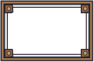

T367 · Entrada de jefes
Muestras para aprobar. Sin integración ni cambios de lógica. Los montajes usan una captura real archivada de T277; las imágenes superpuestas no son una captura de M66 funcionando. Zoom del navegador al 100 % para revisar las medidas en píxeles CSS.
Los ocho cuadros · 256 px y 34 px
Cada tira grande tiene ocho cuadros de 256 px, sin reducir. Cada tira chica conserva el efecto a 34 px y el retrato existente a 34 px al lado. Suelo y camino tomados de la pradera real. Desplazá horizontalmente para comparar.
El tinte multiplica RGB; conserva el alfa. Se muestra también el rojo real de los datos porque difiere del carmesí pedido en la ficha. El cuadro 8 no tiene cobertura. El verde pierde contraste sobre el pasto, sobre todo a 34 px: queda observado para revisión, sin aprobación de legibilidad.
Entrada del nivel 1 · 1280 × 720
Centro del efecto y pies en (32, 144); casillas de 64 px. El atlas se muestra 1:1 y se corta naturalmente a la izquierda. El Jefe usa los cuadros existentes de boss_walk.png. El recorrido y su tamaño son aproximaciones de revisión, sin ejecutar el juego.
Animación de revisión: 8 cuadros en 0,7 s y una espera de 1,4 s entre repeticiones. El reproductor HTML usa 87,5 ms por cuadro; el GIF redondea a centésimas y suma los mismos 700 ms.
GIF independiente a velocidad real
Los ocho montajes en fila, a escala real
Cartel con el retrato existente
720 × 120 px; retrato de 96 px. Tres rótulos: título de 23 px, nombre de 20 px y descripción completa de 20 px que se parte en dos renglones. El fondo oscuro pertenece al montaje del panel; el centro del PNG del marco permanece transparente.
Celular de referencia: pantalla 2400 × 1080, lienzo de 1280 × 720 ampliado al 150 %, bandas laterales de 240 px. Cartel de 1080 × 180 px físicos, retrato de 144 px y texto mínimo de 30 px. Es un montaje de escala; no valida el HUD ni la adaptación de Android.
Piezas aisladas · alfa real
Sin texto en las piezas, sin sombras pintadas y sin marcas comunitarias. Los fondos cuadriculados son solo del HTML.


9-slice: 32 px en cada lado; cuatro remaches contenidos en las esquinas. Bordes lisos estirables. Prueba a 720 × 120 sin fondo:
Límites, decisiones abiertas y reproducción · Validación mecánica · Instrucciones de diseño